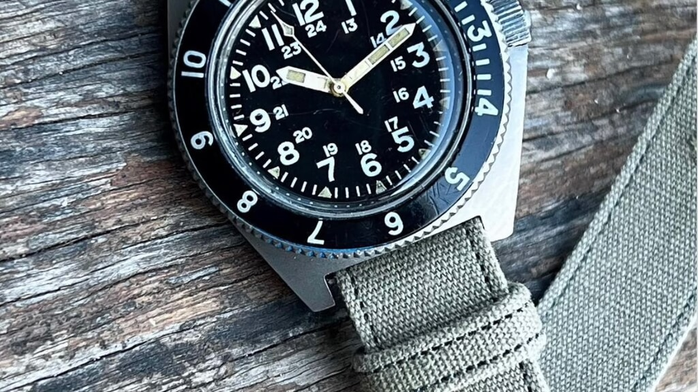
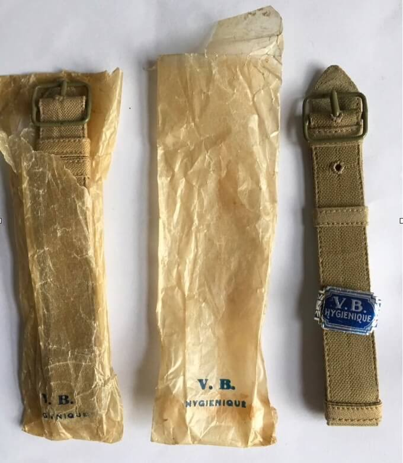

Kickstarter Campaign Launched for 20mm VB Hygienique Watch Strap Reproduction
Rob Fraser of A.F.0210. has started a new Kickstarter campaign to fund the production of a 20mm width reproduction of the World War II-era VB Hygienique watch strap. This follows a previous successful campaign in 2021 that reintroduced 16mm and 18mm versions of the historical strap.
 Nenad Pantelic • April 5, 2025
Nenad Pantelic • April 5, 2025

The original VB Hygienique strap, a precursor to the NATO strap, was designed for military watches with fixed bars. This new campaign aims to address requests for a wider 20mm variant that will fit modern watch lug widths, thereby minimizing gaps between the strap and watch case, so-called "understrapping".
The reproduced strap will maintain the original's design elements, including a wire ladder buckle and two canvas keeper loops. The 20mm version will offer adjustable lengths from 205mm to 270mm.

With six years of experience reproducing military watch straps under his belt, Fraser (A.F.0210. Strap) highlights the past successes of campaigns for the A.F.0210 webbing strap and various 6B/2617 NATO strap designs. This new campaign uses the same suppliers as previous projects.
The Kickstarter campaign is scheduled to run in April 2025, with production targeted for May to July 2025. Distribution is planned for mid-August 2025. Shipping will be from Australia, with delivery times estimated at two weeks. Customs duties, if applicable, will be the responsibility of the backer.
Ready to Back the Project?
If you appreciate the dedication to historical accuracy and the proven track record of Rob's previous successful projects, please consider backing this campaign.
Here is the link to the Kickstarter project:
https://www.kickstarter.com/projects/6b2617/the-wider-ww2-fabric-nato-strap/Every bit of support counts!